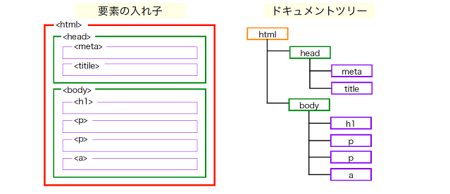

gitについて
ソフトウェアの変更履歴を記録・追跡し、複数の人が協力してコードを管理するためのツールです。コードのバージョン管理や協力開発を効率的に行うために使用されます。

htmlについて
ウェブページを作成するためのマークアップ言語です。HTML文書はテキストで書かれ、タグと呼ばれる特別な要素で構成されます。これらのタグはコンテンツの構造や意味を定義し、ブラウザに対してウェブページの表示方法を指示します。HTMLは、テキスト、画像、リンク、フォームなどの要素を配置し、ハイパーリンクを作成するために使用され、ウェブの基本的な言語として広く採用されています。
